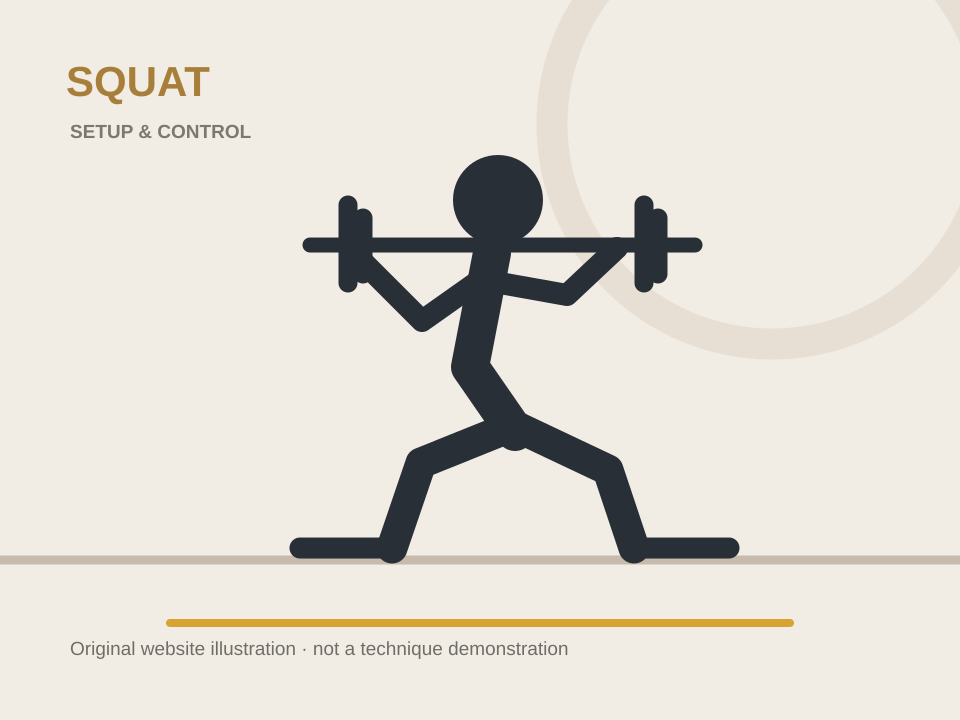
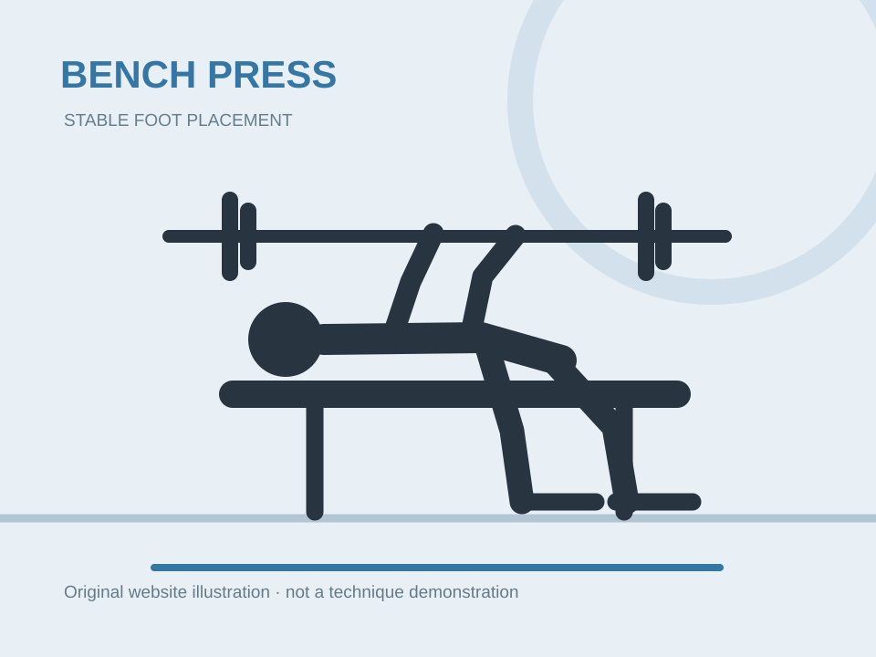
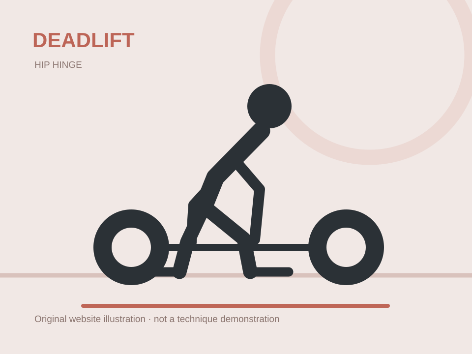

01 · Squat
Learn how to create a stable and consistent setup before squatting.
- Set your feet in a balanced position.
- Brace your trunk before moving.
- Keep the bar under control.
Video © Juggernaut Training Systems · Open on YouTube
Start with the setup of the squat, bench press and deadlift. Videos are embedded from the official Juggernaut Training Systems YouTube channel.

Learn how to create a stable and consistent setup before squatting.

A good bench press starts with steady feet and consistent pressure.

The hip hinge is one of the most useful movement patterns to learn for a deadlift.
All three videos were created and published by Juggernaut Training Systems (JTS). This student website links to and embeds the original videos; it does not claim ownership. The three exercise illustrations were created specifically for this website.
Embedded videos require an internet connection and permission from YouTube/the uploader. Use the “Open on YouTube” link if a player does not load.